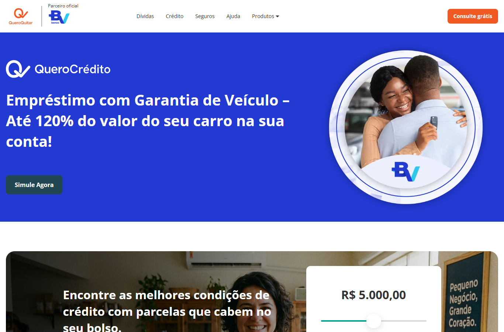
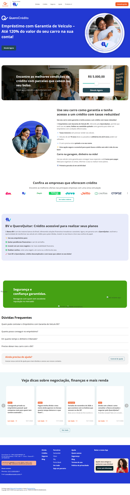

Sistema de Investigação de Marca e Identidade Online
https://www.queroquitar.com.br/credito/bv
Prioridade: HIGH · Cenário: C_POSSIBLE_OFFICIAL_CHANNEL · Revisão humana: PENDING
Trata-se de plataforma comercial de crédito e negociação de dívidas (QueroQuitar S.A, CNPJ 54.042.668/0001-20) atuando na captação de clientes para o produto 'Empréstimo com Garantia de Veículo BV' por meio de landing page dedicada (/credito/bv). Apesar de informar seu próprio CNPJ no rodapé e listar outros credores em seção secundária, a página exibe ostensivamente o logotipo do Banco BV no cabeçalho ao lado da alegação 'Parceiro oficial' e no banner principal de simulação, sem apresentar a declaração obrigatória de correspondente bancário e os canais de ouvidoria da instituição contratante, exigindo revisão humana prioritária à luz da Resolução CMN nº 4.935/2021. [Revisor: CONFIRM] As evidências confirmam a hipótese do analista. Trata-se de página comercial dedicada ('https://www.queroquitar.com.br/credito/bv') operada pela plataforma de crédito e renegociação QueroQuitar S.A (CNPJ 54.042.668/0001-20), que exibe com destaque o logotipo do Banco BV no cabeçalho com a inscrição 'Parceiro oficial' e no banner principal, ofertando simulador próprio para 'Empréstimo com Garantia de Veículo BV' sem apresentar de forma clara a condição de correspondente bancário e os canais de atendimento/ouvidoria da instituição financeira contratante, em desconformidade com a Resolução CMN nº 4.935/2021.


| Ref | Tipo | Local | Conteúdo |
|---|---|---|---|
| E-URL | domain | url | URL final: https://www.queroquitar.com.br/credito/bv (domínio: www.queroquitar.com.br) |
| E-COLLECT | network | collection | Status da coleta: OK; HTTP 200; ocorrências: network did not become idle (continuing) |
| E-DISC-001 | text | search_index | Índice de busca (grounding): queroquitar.com.br — **URL:** `https://queroquitar.com.br/` (Landing page de Empréstimo com Garantia de Veículo BV) | **Uso da Marca:** Destaque visual proeminente com a aplicação lado a lado `Logo QueroQuitar. Parceiro oficial. Logo bv.`, ofertando simulador próprio ("Simule Agora") para o produto "Empréstimo com Garantia de Veículo BV – Até 120% do valor do seu carro na sua conta!" | **Conformidade (CNPJ / Correspondente):** Identifica-se ostensivamente como "Parceiro oficial" do Banco BV para captação de propostas de crédito e renegociação, mas não exibe de forma imediata no corpo principal da landing page a declaração formal padronizada de correspondente bancário da Resolução CMN nº 4.935/2021 |
| E-SHOT-VIEWPORT | screenshot | viewport | evidence\C6fee1193e4\attempt-1\viewport.png (sha256 aa8d599291e6100a…) |
| E-SHOT-FULL | screenshot | page | evidence\C6fee1193e4\attempt-1\fullpage.png (sha256 be126742dffed981…) |
| E-TITLE | title | head | As melhores ofertas para quitar dívidas | QueroQuitar |
| E-META-1 | meta | head | description: Negocie online e de forma justa e segura com a QueroQuitar! Em 4 cliques você quita suas dívidas em até 48x, com descontos imperdíveis. Saiba mais! |
| E-META-2 | meta | head | og:title: As melhores ofertas para quitar dívidas | QueroQuitar |
| E-META-3 | meta | head | og:description: Negocie online e de forma justa e segura com a QueroQuitar! Em 4 cliques você quita suas dívidas em até 48x, com descontos imperdíveis. Saiba mais. |
| E-HEAD-1 | heading | page | Empréstimo com Garantia de Veículo – Até 120% do valor do seu carro na sua conta! |
| E-HEAD-2 | heading | page | Encontre as melhores condições de crédito com parcelas que cabem no seu bolso. |
| E-HEAD-3 | heading | page | R$ 5.000,00 |
| E-HEAD-4 | heading | page | Use seu carro como garantia e tenha acesso a um crédito com taxas reduzidas! |
| E-HEAD-5 | heading | page | Carro na garagem, dinheiro na mão! |
| E-HEAD-6 | heading | page | Confira as empresas que oferecem crédito |
| E-HEAD-7 | heading | page | BV e QueroQuitar: Crédito acessível para realizar seus planos |
| E-HEAD-8 | heading | page | Segurança e confiança garantidas. |
| E-HEAD-9 | heading | page | Dúvidas Frequentes |
| E-HEAD-10 | heading | page | Quem pode contratar o Empréstimo com Garantia de Veículo BV? |
| E-HEAD-11 | heading | page | Quanto posso conseguir no empréstimo? |
| E-HEAD-12 | heading | page | Em quanto tempo o dinheiro é liberado? |
| E-HEAD-13 | heading | page | Preciso deixar meu carro com o BV? |
| E-HEAD-14 | heading | page | Ainda precisa de ajuda? |
| E-HEAD-15 | heading | page | Veja dicas sobre negociação, finanças e mais renda |
| E-HDR | text | header | Parceiro oficial Dívidas Crédito Seguros Ajuda Produtos Consulte grátis |
| E-FOLD | text | viewport (acima da dobra) | Parceiro oficial Dívidas Crédito Seguros Ajuda Produtos Consulte grátis Empréstimo com Garantia de Veículo – Até 120% do valor do seu carro na sua conta! Simule Agora Encontre as melhores condições de crédito com parcelas que cabem no seu bolso. R$ 5.000,00 |
| E-FTR | text | footer | QueroQuitar S.A - CNPJ: 54.042.668/0001-20 Av. dos Autonomistas, nº 2561, sala 17 – Centro – Osasco/SP – CEP 06090-020 Atendimento somente nos canais digitais, rápido e sem burocracias. Não realizamos atendimento presencial. Nossos contatos WhatsApp: +55 (11) 97670-0558 Email: contato@queroquitar.com.br Dívida Crédito Seguros Blog Parceiros Santander Claro Sky Porto Bank Ver tudo Seja um parceiro Ajuda Quem somos Segurança Blog Termos de uso Politica de privacidade Baixe o nosso App Ajude seus amigos a quitarem suas dívidas! Enviar pelo WhatsApp |
| E-NAV | nav | header | <https://www.queroquitar.com.br/> | <https://www.queroquitar.com.br/credito/bv> | Dívidas <https://www.queroquitar.com.br/> | Crédito <https://www.queroquitar.com.br/querocredito> | Seguros <https://www.queroquitar.com.br/quero-seguros/> | Ajuda <https://www.queroquitar.com.br/ajuda> | Consulte grátis <https://app.queroquitar.com.br/?pg=%2Fcredit> |
| E-CTA-1 | cta | header | Produtos |
| E-CTA-2 | cta | header | Consulte grátis <https://app.queroquitar.com.br/?pg=%2Fcredit> |
| E-CTA-3 | cta | page | Simule Agora <https://app.queroquitar.com.br/?pg=%2Fcredit&qc=1&color=2239d2&partner=bv> |
| E-CTA-4 | cta | page | Simule Agora <https://app.queroquitar.com.br/?pg=%2Fcredit&qc=1&color=2239d2&partner=bv> |
| E-CTA-5 | cta | page | Ver todos credores |
| E-CTA-6 | cta | page | Central de ajuda <https://www.queroquitar.com.br/ajuda> |
| E-CTA-7 | cta | page | Seta para ir para esquerda |
| E-CTA-8 | cta | page | Ler mais <https://www.queroquitar.com.br/querorenda/blog/credito/consignado-privado-ou-emprestimo-pessoal%20/> |
| E-CTA-9 | cta | page | Ler mais <https://www.queroquitar.com.br/querorenda/blog/dividas/paguei-divida-nome-continua-serasa/> |
| E-CTA-10 | cta | page | Ler mais <https://www.queroquitar.com.br/querorenda/blog/organizacao/boletos-vencimento-20-novembro-2026-feriado/> |
| E-CTA-11 | cta | page | Ler mais <https://www.queroquitar.com.br/querorenda/blog/besni/divida-besni-fatura-atrasada-negociar-queroquitar/> |
| E-CTA-12 | cta | page | Ler mais <https://www.queroquitar.com.br/querorenda/blog/noticias/inss-novembro-2026-calendario-pagamentos/> |
| E-CTA-13 | cta | page | Ler mais <https://www.queroquitar.com.br/querorenda/blog/dividas/lei-superendividamento-como-pedir-ajuda-procon%20/> |
| E-CTA-14 | cta | page | Ler mais <https://www.queroquitar.com.br/querorenda/blog/antecipacao-saque-aniversario-fgts/antecipacao-saque-aniversario-fgts-regras-novembro-2026%20/> |
| E-CTA-15 | cta | page | Ler mais <https://www.queroquitar.com.br/querorenda/blog/feirao-2026/desconto-99-feirao-premiado-por-que-varia/> |
| E-CTA-16 | cta | page | Seta para ir para direita |
| E-CTA-17 | cta | page | Ver mais <https://www.queroquitar.com.br/blog/> |
| E-CTA-18 | cta | footer | Abrir QRCode |
| E-CTA-19 | cta | footer | Seja um parceiro |
| E-CTA-20 | cta | footer | Enviar pelo WhatsApp |
| E-CONTACT-1 | contact | footer | +55 (11) 97670-0558 <https://wa.me/5511976700558?text=Ol%C3%A1%2C%20eu%20gostaria%20de%20negociar%20a%20minha%20d%C3%ADvida.%20O%20que%20preciso%20fazer%3F> |
| E-CONTACT-2 | contact | footer | contato@queroquitar.com.br <mailto:contato@queroquitar.com.br> |
| E-CONTACT-3 | contact | footer | Abrir Whatsapp web <https://wa.me/5511976700558?text=Ol%C3%A1%2C%20eu%20gostaria%20de%20negociar%20a%20minha%20d%C3%ADvida.%20O%20que%20preciso%20fazer%3F> |
| E-CONTACT-4 | contact | footer | <https://www.instagram.com/queroquitar/> |
| E-CONTACT-5 | contact | footer | <https://www.facebook.com/queroquitar> |
| E-CONTACT-6 | contact | footer | <https://wa.me/5511976700558?text=Ol%C3%A1%2C%20eu%20gostaria%20de%20negociar%20a%20minha%20d%C3%ADvida.%20O%20que%20preciso%20fazer%3F> |
| E-IMG-1 | image | header (acima da dobra) | imagem alt='Logo QueroQuitar' src=https://www.queroquitar.com.br/assets/images/QQ_vertical_P1-P.png (80x80, acima da dobra) |
| E-IMG-2 | image | header (acima da dobra) | imagem alt='Logo bv' src=https://www.queroquitar.com.br/assets/images/optimized/creditor-start/bv.png (200x40, acima da dobra) |
| E-IMG-3 | image | page (acima da dobra) | imagem alt='Casal jovem negros se abrançando feliz, mulher sorrindo e com uma chave de carro na mão' src=https://www.queroquitar.com.br/assets/images/optimized/hero_lp-credito-bv.png (500x473, acima da dobra) |
| E-IMG-4 | image | page | imagem alt='Casal sorrindo e felizes, vendo a tela de um notebook' src=https://www.queroquitar.com.br/assets/images/optimized/banner-interno-credito-bv-1.png (464x464, abaixo da dobra) |
| E-IMG-5 | image | page | imagem alt='Logo sim' src=https://www.queroquitar.com.br/assets/images/optimized/creditor-center/sim.png (146x29, abaixo da dobra) |
| E-IMG-6 | image | page | imagem alt='Logo bv' src=https://www.queroquitar.com.br/assets/images/optimized/creditor-center/bv.png (146x29, abaixo da dobra) |
| E-IMG-7 | image | page | imagem alt='Logo simplic' src=https://www.queroquitar.com.br/assets/images/optimized/creditor-center/simplic.png (146x29, abaixo da dobra) |
| E-IMG-8 | image | page | imagem alt='Logo noverde' src=https://www.queroquitar.com.br/assets/images/optimized/creditor-center/noverde.png (146x29, abaixo da dobra) |
| E-IMG-9 | image | page | imagem alt='Logo juvo' src=https://www.queroquitar.com.br/assets/images/optimized/creditor-center/juvo.png (146x29, abaixo da dobra) |
| E-IMG-10 | image | page | imagem alt='Logo jeitto' src=https://www.queroquitar.com.br/assets/images/optimized/creditor-center/jeitto.png (146x29, abaixo da dobra) |
| E-IMG-11 | image | page | imagem alt='Logo creditas' src=https://www.queroquitar.com.br/assets/images/optimized/creditor-center/creditas.png (146x29, abaixo da dobra) |
| E-IMG-12 | image | page | imagem alt='Logo crefaz' src=https://www.queroquitar.com.br/assets/images/optimized/creditor-center/crefaz.png (146x29, abaixo da dobra) |
| E-IMG-13 | image | page | imagem alt='Logo blipay' src=https://www.queroquitar.com.br/assets/images/optimized/creditor-center/blipay.png (146x29, abaixo da dobra) |
| E-IMG-14 | image | page | imagem alt='Logo flowcredi' src=https://www.queroquitar.com.br/assets/images/optimized/creditor-center/flowcredi.png (146x29, abaixo da dobra) |
| E-IMG-15 | image | page | imagem alt='Logo acredity' src=https://www.queroquitar.com.br/assets/images/optimized/creditor-center/acredity.png (146x29, abaixo da dobra) |
| E-IMG-16 | image | page | imagem alt='Logo juca' src=https://www.queroquitar.com.br/assets/images/optimized/creditor-center/juca.png (146x29, abaixo da dobra) |
| E-IMG-17 | image | page | imagem alt='Logo koin' src=https://www.queroquitar.com.br/assets/images/optimized/creditor-center/koin.png (146x29, abaixo da dobra) |
| E-IMG-18 | image | page | imagem alt='Logo sim' src=https://www.queroquitar.com.br/assets/images/optimized/creditor-center/sim.png (146x29, abaixo da dobra) |
| E-IMG-19 | image | page | imagem alt='Logo bv' src=https://www.queroquitar.com.br/assets/images/optimized/creditor-center/bv.png (146x29, abaixo da dobra) |
| E-IMG-20 | image | page | imagem alt='Logo simplic' src=https://www.queroquitar.com.br/assets/images/optimized/creditor-center/simplic.png (146x29, abaixo da dobra) |
| E-TXT-001 | text | page | Parceiro oficial |
| E-TXT-002 | text | page | O Empréstimo com Garantia de Veículo BV, oferecido pela QueroQuitar, permite que você use seu carro, ônibus ou caminhão quitado como garantia para obter um empréstimo com condições diferenciadas. |
| E-TXT-003 | text | page | BV e QueroQuitar: Crédito acessível para realizar seus planos |
| E-TXT-004 | text | page | O Banco BV é um dos maiores bancos do Brasil, oferecendo soluções financeiras inovadoras e acessíveis. Agora, em parceria com a QueroQuitar, você tem a oportunidade de transformar seu veículo em crédito para quitar dívidas, investir no seu futuro e tirar seus sonhos do papel. |
| E-TXT-005 | text | page | 🚀 Com BV e QueroQuitar, crédito descomplicado e com taxas que cabem no seu bolso! |
| E-TXT-006 | text | page | Quem pode contratar o Empréstimo com Garantia de Veículo BV? |
| E-TXT-007 | text | page | O Banco BV libera até 120% do valor do seu veículo! O valor exato dependerá da avaliação do seu carro e do seu perfil de crédito. |
| E-TXT-008 | text | page | Preciso deixar meu carro com o BV? |
| E-TXT-009 | text | page | Feriados de novembro de 2026: o que acontece com os boletos que vencem no dia 20? |
| E-TXT-010 | text | page | Boleto vence no feriado de 20 de novembro de 2026? Saiba quando pagar sem juros, o que muda nos bancos e quais contas exigem atenção. |
| E-TXT-011 | text | page | Dívida Besni atrasada? Saiba como consultar a fatura, pedir a segunda via e negociar pela QueroQuitar com descontos e parcelamentos disponíveis. |
| E-TXT-012 | text | page | QueroQuitar S.A - CNPJ: 54.042.668/0001-20 |
| E-TXT-013 | text | page | Av. dos Autonomistas, nº 2561, sala 17 – Centro – Osasco/SP – CEP 06090-020 |
| E-TXT-014 | text | page | Atendimento somente nos canais digitais, rápido e sem burocracias. Não realizamos atendimento presencial. |
| E-TXT-015 | text | page | WhatsApp: |
| E-TXT-016 | text | page | Parceiros |
| E-TXT-017 | text | page | Seja um parceiro |
| E-TXT-018 | text | page | Enviar pelo WhatsApp |
| Dimensão | Sinal | Achado | Refs |
|---|---|---|---|
| VISUAL_IDENTITY | CONFUSION | A landing page adota paleta azul predominante no banner principal em conjunto com o logotipo do Banco BV no cabeçalho e no hero banner, criando forte associação visual com a instituição financeira. | E-SHOT-VIEWPORT E-IMG-2 E-IMG-3 |
| DECLARED_COMMERCIAL_IDENTITY | LEGITIMATE | O rodapé identifica a empresa responsável pelo domínio como 'QueroQuitar S.A - CNPJ: 54.042.668/0001-20', com endereço em Osasco/SP. | E-FTR E-TXT-012 E-TXT-013 |
| CORRESPONDENT_TRANSPARENCY | CONFUSION | Não há declaração formal de atuação como correspondente bancário nos termos da Resolução CMN nº 4.935/2021, utilizando-se apenas o termo 'Parceiro oficial' no topo da página. | E-HDR E-FTR E-SHOT-FULL |
| INSTITUTIONAL_LANGUAGE | CONFUSION | A página intitula a empresa como 'Parceiro oficial' junto ao logotipo do Banco BV e promove especificamente o 'Empréstimo com Garantia de Veículo BV'. | E-HDR E-TXT-001 E-TXT-002 E-TXT-004 |
| LOGO_USAGE | CONFUSION | O logotipo do Banco BV é exibido com destaque no cabeçalho (acima da dobra), dentro da arte principal do topo e no corpo da página. | E-IMG-2 E-IMG-3 E-IMG-6 E-SHOT-VIEWPORT E-SHOT-FULL |
| SERVICE_JOURNEY | CONFUSION | Disponibiliza simulador de crédito na própria página com chamadas 'Simule Agora' direcionando para fluxo de captação parametrizado com 'partner=bv'. | E-CTA-3 E-CTA-4 E-FOLD E-SHOT-VIEWPORT |
| CONTACT_CHANNELS | CONFUSION | Exibe apenas canais próprios da QueroQuitar (WhatsApp e e-mail), sem informar os canais de SAC e Ouvidoria do Banco BV. | E-FTR E-CONTACT-1 E-CONTACT-2 |
| CONSUMER_CONFUSION | CONFUSION | O co-branding no cabeçalho com a expressão 'Parceiro oficial' e o destaque ao produto e à marca do Banco BV sem a devida transparência regulatória de correspondente podem induzir o consumidor a erro quanto à chancela ou natureza do canal. | E-HDR E-IMG-2 E-SHOT-VIEWPORT E-SHOT-FULL |
Trata-se de plataforma comercial de crédito e negociação de dívidas (QueroQuitar S.A, CNPJ 54.042.668/0001-20) atuando na captação de clientes para o produto 'Empréstimo com Garantia de Veículo BV' por meio de landing page dedicada (/credito/bv). Apesar de informar seu próprio CNPJ no rodapé e listar outros credores em seção secundária, a página exibe ostensivamente o logotipo do Banco BV no cabeçalho ao lado da alegação 'Parceiro oficial' e no banner principal de simulação, sem apresentar a declaração obrigatória de correspondente bancário e os canais de ouvidoria da instituição contratante, exigindo revisão humana prioritária à luz da Resolução CMN nº 4.935/2021.
Há declaração de correspondente ou de parceria, sem identificação suficiente ou sem confirmação cadastral.
| Tipo | Valor | Ref | Contexto |
|---|---|---|---|
| domain | queroquitar.com.br | E-URL | |
| cnpj | 54.042.668/0001-20 | E-FTR | QueroQuitar S.A - CNPJ: 54.042.668/0001-20 |
| legal_name | QueroQuitar S.A | E-FTR | |
| contato@queroquitar.com.br | E-FTR | ||
| social_profile | https://www.instagram.com/queroquitar/ | E-CONTACT-4 | |
| social_profile | https://www.facebook.com/queroquitar | E-CONTACT-5 | |
| phone | (11) 97670-0558 | E-FTR | |
| +55 (11) 97670-0558 <https://wa.me/5511976700558?text=Ol%C3%A1%2C%20eu%20gostaria%20de%20negociar%20a%20minha%20d%C3%ADvida.%20O%20que%20preciso%20fazer%3F> | E-CONTACT-1 | ||
| Abrir Whatsapp web <https://wa.me/5511976700558?text=Ol%C3%A1%2C%20eu%20gostaria%20de%20negociar%20a%20minha%20d%C3%ADvida.%20O%20que%20preciso%20fazer%3F> | E-CONTACT-3 | ||
| <https://wa.me/5511976700558?text=Ol%C3%A1%2C%20eu%20gostaria%20de%20negociar%20a%20minha%20d%C3%ADvida.%20O%20que%20preciso%20fazer%3F> | E-CONTACT-6 | ||
| partnership_declaration | Parceiro oficial | E-DISC-001 | **Conformidade (CNPJ / Correspondente):** Identifica-se ostensivamente como "Parceiro oficial" do Banco BV para captação de propostas de crédito e renegociação, mas não exibe de forma imediata no corp |
Mapeamento indicativo para apoio à auditoria. Não constitui conclusão regulatória; a decisão definitiva pertence à auditoria.
Fonte: NORMATIVE
Art. 14. O contrato de correspondente deve estabelecer: [...] II - vedação à utilização, pelo contratado, de logomarca ou de outros atributos que sejam similares aos adotados pela instituição contratante em suas agências, postos de atendimento, sítio eletrônico na internet, aplicativo ou outras plataformas de comunicação em rede;
Hipótese: Uso de logomarca ou de atributos similares aos adotados pela contratante em seus canais. Aplicável somente se confirmado o vínculo de correspondente.
Evidência observada: E-IMG-2 E-IMG-3 E-IMG-6 E-SHOT-FULL E-SHOT-VIEWPORT
Informação faltante:
Fonte: NORMATIVE
Art. 14. O contrato de correspondente deve estabelecer: [...] III - divulgação ao público, pelo contratado, de sua condição de prestador de serviços à instituição contratante, identificada pelo nome com que é conhecida no mercado, com descrição dos produtos e serviços oferecidos e canais de contato da instituição contratante, inclusive de sua ouvidoria, em local visível, em destaque e em formato legível, por meio de: a) sítio eletrônico do correspondente na internet, acessível na página inicial; b) aplicativo e outras plataformas de comunicação em rede do correspondente; [...]
Hipótese: Divulgação ao público da condição de prestador de serviços à contratante ausente, insuficiente ou sem destaque. Aplicável somente se confirmado o vínculo de correspondente.
Evidência observada: E-CONTACT-1 E-CONTACT-2 E-DISC-001 E-FOLD E-FTR E-HDR E-IMG-2 E-SHOT-FULL E-SHOT-VIEWPORT E-TXT-001 E-TXT-002 E-TXT-004 E-URL
Informação faltante:
Fonte: NORMATIVE
Art. 3º O correspondente atua por conta e sob as diretrizes da instituição contratante, que assume inteira responsabilidade pelo atendimento prestado aos clientes e usuários por meio do contratado.
Hipótese: Atendimento ao público prestado por meio do contratado em condições que podem não seguir as diretrizes da contratante. Aplicável somente se confirmado o vínculo de correspondente.
Evidência observada: E-CONTACT-1 E-CONTACT-2 E-CTA-3 E-CTA-4 E-FOLD E-FTR E-HEAD-3 E-SHOT-VIEWPORT
Informação faltante:
Limitações: requisitos contratuais/internos não fornecidos: mapeamento limitado ao texto normativo
Decisão: CONFIRM → REVIEW_REQUIRED / HIGH
As evidências confirmam a hipótese do analista. Trata-se de página comercial dedicada ('https://www.queroquitar.com.br/credito/bv') operada pela plataforma de crédito e renegociação QueroQuitar S.A (CNPJ 54.042.668/0001-20), que exibe com destaque o logotipo do Banco BV no cabeçalho com a inscrição 'Parceiro oficial' e no banner principal, ofertando simulador próprio para 'Empréstimo com Garantia de Veículo BV' sem apresentar de forma clara a condição de correspondente bancário e os canais de atendimento/ouvidoria da instituição financeira contratante, em desconformidade com a Resolução CMN nº 4.935/2021.
| Tema | Severidade | Questionamento | Refs |
|---|---|---|---|
| Identificação da empresa operadora no rodapé | LOW | Embora a QueroQuitar S.A informe sua razão social e CNPJ (54.042.668/0001-20) no rodapé e exiba outras instituições parceiras no corpo da página, a página dedicada '/credito/bv' utiliza o logotipo do Banco BV no cabeçalho ao lado do selo 'Parceiro oficial' e promove 'Empréstimo com Garantia de Veículo BV' com simulador próprio sem a declaração formal de correspondente bancário e sem informar a ouvidoria do Banco BV (Res. CMN nº 4.935/2021). | E-URL E-HDR E-IMG-2 E-CTA-3 E-TXT-002 E-FTR E-SHOT-VIEWPORT E-SHOT-FULL |
| Fonte | Consulta / hipótese | URL original | Título / trecho |
|---|---|---|---|
| grounding | Objetivo: Páginas de financiamento que expõem arquivos de logotipo da marca.
Execute no Google Search as seguintes consultas (dorks):
- (inurl:logo-bv OR "logo-bv" OR "logo-bv-financeira") (financiamento OR veículos) -site:bv.com.br -site:bancobv.com.br -site:bvfinanceira.com.br -site:bvinvestimentos.com.br -site:napista.com.br -site:bvopen.com.br -site:meufinanciamentosolar.com.br -site:votorantim.com.br -site:vam.com.br -site:reclameaqui.com.br -site:jusbrasil.com.br -site:jus.br -site:weebly.com -site:site123.me
- ("Logo Banco BV" OR "Logo bv financeira" OR "logo BV") financiamento veículos -site:brandsoftheworld.com -site:logospng.org -site:bv.com.br -site:bancobv.com.br -site:bvfinanceira.com.br -site:bvinvestimentos.com.br -site:napista.com.br -site:bvopen.com.br -site:meufinanciamentosolar.com.br -site:votorantim.com.br -site:vam.com.br -site:reclameaqui.com.br -site:jusbrasil.com.br -site:jus.br -site:weebly.com -site:site123.me
Liste de forma abrangente as páginas públicas encontradas (até 12 resultados distintos), informando para cada uma o nome do estabelecimento/perfil, a URL e como a marca é utilizada (destaque visual, título, feirão, simulador, redes sociais e se há ou não identificação clara de CNPJ e condição de correspondente bancário). H1-identity:logo-assets | https://www.queroquitar.com.br/credito/bv | queroquitar.com.br **URL:** `https://queroquitar.com.br/` (Landing page de Empréstimo com Garantia de Veículo BV) | **Uso da Marca:** Destaque visual proeminente com a aplicação lado a lado `Logo QueroQuitar. Parceiro oficial. Logo bv.`, ofertando simulador próprio ("Simule Agora") para o produto "Empréstimo com Garantia de Veículo BV – Até 120% do valor do seu carro na sua conta!" | **Conformidade (CNPJ / Correspondente):** Identifica-se ostensivamente como "Parceiro oficial" do Banco BV para captação de propostas de crédito e renegociação, mas não exibe de forma imediata no corpo principal da landing page a declaração formal padronizada de correspondente bancário da Resolução CMN nº 4.935/2021 |
Original: https://www.queroquitar.com.br/credito/bv
Final: https://www.queroquitar.com.br/credito/bv
| Artefato | Caminho | SHA-256 | Bytes |
|---|---|---|---|
| screenshot_viewport | evidence\C6fee1193e4\attempt-1\viewport.png | aa8d599291e6100a140b7a1216375fc7d3c23c0358f76968007b91733f668d35 | 614954 |
| screenshot_full | evidence\C6fee1193e4\attempt-1\fullpage.png | be126742dffed9818490b19cc5c65df8f90c9c227bebaf960d6efbdbb7513b7c | 1495893 |
| html | evidence\C6fee1193e4\attempt-1\page.html.txt | aa3d9fa41b5e7ddc7cce1581ff9ac9849af49cee0fd6dd72a4072e6915b1dc01 | 108080 |
| text | evidence\C6fee1193e4\attempt-1\text.txt | abc6a80b537e6cf623b02e2086bd698d983796afec9fe243ea88ded3a75a2240 | 5839 |
| page_data | evidence\C6fee1193e4\attempt-1\page.json | 04afe765a42125b35e1fc8a76641b4f9684c606599e3c68dc4c042695fca2977 | 38998 |
| Quando | De | Para | Nota |
|---|---|---|---|
| 2026-11-23T14:17:58+00:00 | DISCOVERED | QUEUED | prioritised (score 1.0) |
| 2026-11-23T14:48:16+00:00 | QUEUED | COLLECTING | |
| 2026-11-23T14:48:33+00:00 | COLLECTING | COLLECTED | |
| 2026-11-23T14:48:33+00:00 | COLLECTED | ANALYZING | |
| 2026-11-23T14:49:23+00:00 | ANALYZING | REVIEWING | |
| 2026-11-23T14:49:35+00:00 | REVIEWING | COMPLETED |